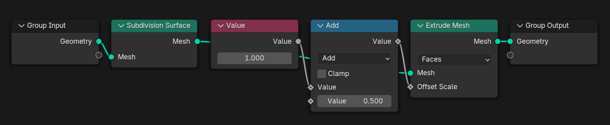
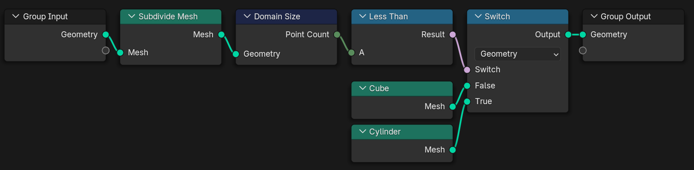

Evaluating Geometry Nodes
Join the interactive part!
Topics
Get Started
Lazy Evaluation
Array Processing
About Me
What's your background?
Get Started

Toposort
Two-Pass Evaluation

Push vs. Pull
Lazy Function API
get_or_request_inputset_output-
set_input_unused -
get_output_usage